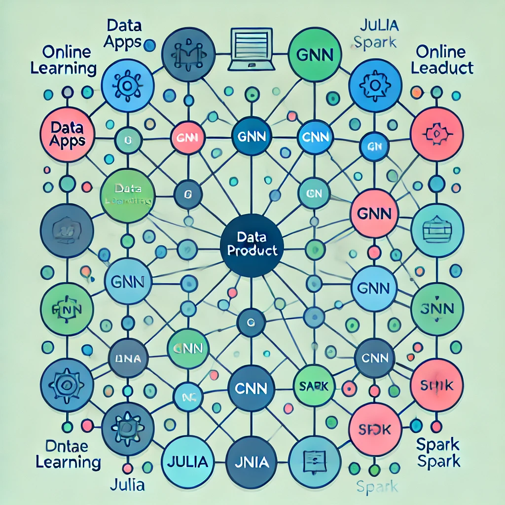

-
[ML]Trustworthy machine learning.
[ML] What is trustworthy machine learning.
-
[ML]Fine Tune Large Language Model for sentiment analysis
[ML] sft Large Language Model
-
[ML]Fine Tune Large Language Model for sentiment analysis2
[ML] sft Tune Large Language Model2
-
[MLOP] Ray.
[MLOP]What is ray.
Welcome to Yangming's Hub of Knowledge
I am a Data & Product Enthusiast.
I am interested in AI/ML & product design & information visualization.
I got my Master of Science in Statistics degree from the University of Victoria.
I got my Bachelor of Honor Mathematics degree from the University of Waterloo.

Personal achievement
- I previously worked on ...
- I’m currently learning kubernetes, airflow
- How to reach me ...
Skills
Programming Skills
Python, R, MySQL, Bash, Julia, CSS, Javascript
Experienced Packages
Qualifications
Yangming's AI/ML Blog
Yangming's Product Blog
-
First Product Blog Post
Welcome to the Product Blog! Here, I will share my experiences and insights on product design, management, and more.
-
Key Principles of Product Design
An overview of essential principles in product design and how to apply them effectively.
Yangming's Data Engineering/BI Blog
-
automation SRSS report
automation with srss report
-
Different data format
difference of the data format
-
First Engineering and BI Blog Post
Welcome to the Engineering and Business Intelligence Blog! This is where I will share my knowledge and experiences in software engineering, data engineering, business intelligence, and big data technologies.
-
Understanding Software Design Patterns
An introduction to common software design patterns and their applications in real-world projects.
-
Building Efficient Data Pipelines
Insights and best practices for building efficient and scalable data pipelines.
Yangming's Thoughts
-
First Thoughts Post
Welcome to my Thoughts section! Here, I will share my personal reflections, ideas, and musings on various topics that interest me.
Contact Information
-
Email: yangmingml@yahoo.com
-
LinkedIn: Yangming Li